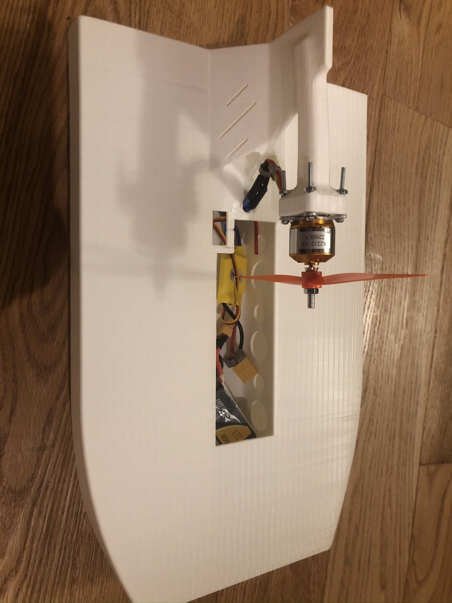

3D-printed airboat with brushless motor, propeller, battery, and RC electronics.
Click any thumbnail to view it larger.
Project Overview
A compact RC build centered on additive manufacturing.
The airboat was a small personal build that combined a printed hull with a brushless motor, propeller, battery, and RC hardware.
It is one of the earlier projects where I used 3D printing for a large structural component rather than only for small brackets or adapters.
What I worked on
- Produced the hull as a large 3D-printed structure.
- Mounted the propulsion system and RC electronics into the printed body.
- Packaged the battery and wiring inside the hull while keeping access to the components.